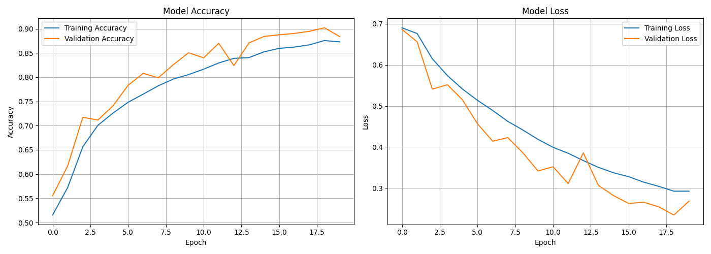
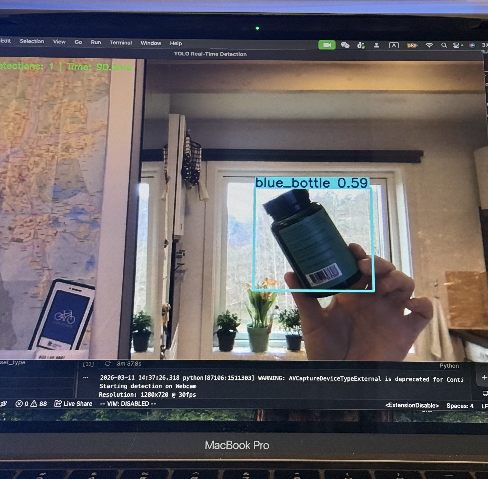

Projects
🐱🐶 Cat vs Dog Image Classifier(CNN)

3-Day Deep Learning Challenge: From Zero to 90% Accuracy on Kaggle's Cats vs Dogs
I built a CNN(Convolutional Neural Network) from scratch achieving 90.2% validation accuracy using only custom architecture and data augmentation. This project taught me the full pipeline of image classification, from data collection to deployment.
Key achievements: Data augmentation, custom 4-block CNN, early stopping, and model checkpointing. Final validation accuracy: 90.2%.
Challenges: Long training time on CPU; learned to optimise with GPU (Google Colab).
🚀 Real-Time Object Detection with YOLOv8

3-Day Deep Learning Challenge: Real-Time Object Detection - From 68% to 85% mAP50 Through Optimization
I trained a YOLOv8 model to recognise a red cup, blue bottle, and phone. I started with a free GPU on Google Colab to speed up experiments, then moved to local CPU to compare performance.
Key achievements: Data collection via Pixabay API, manual YOLO-format labeling, hyperparameter tuning, and deployment to live webcam feed.
Result: Achieved 85% mAP50(mean Average Precision) on validation set, indicating that the detection accuracy is quite ideal under relaxed matching criteria. Meanwhile, the model achieved an inference speed of 4 to 5 FPS(Frames Per Second) on the CPU, with a single image processing time of approximately 0.2 seconds, demonstrating the effectiveness of the lightweight design and its potential for deployment on edge devices.
🚢 Titanic Survival Prediction (Django + ML)
Team Project (4-person agile team) - 2 weeks
Developed a full-stack ML web app using Django and scikit-learn. I was responsible for database model design (Prediction table), prediction form with validation, and integration of a Logistic Regression model.
Outcome: A fully functional web app that predicts survival chances based on passenger data, with persistent storage of results.